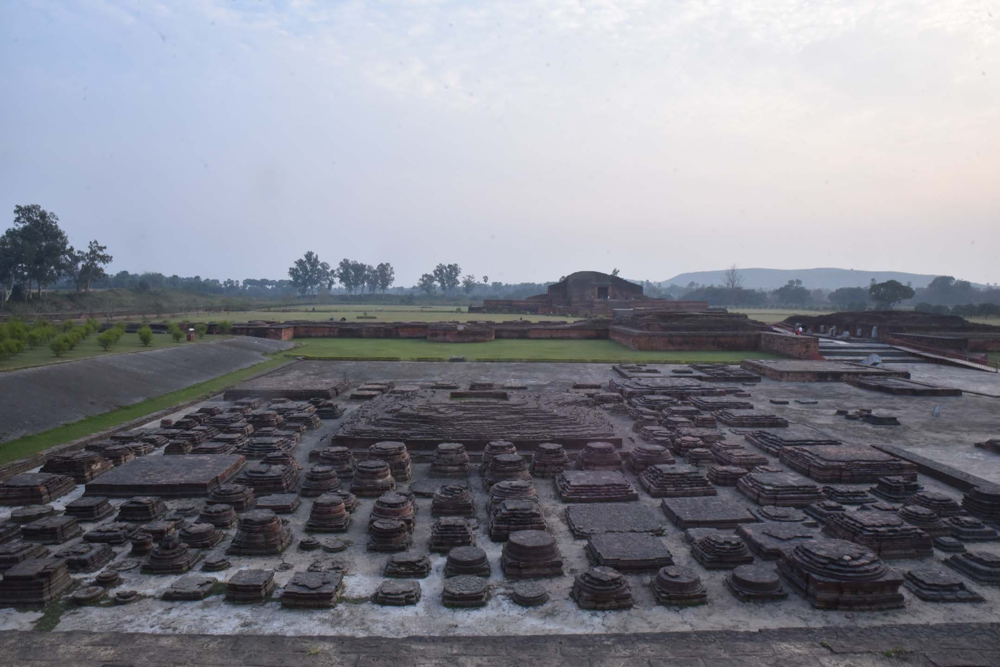
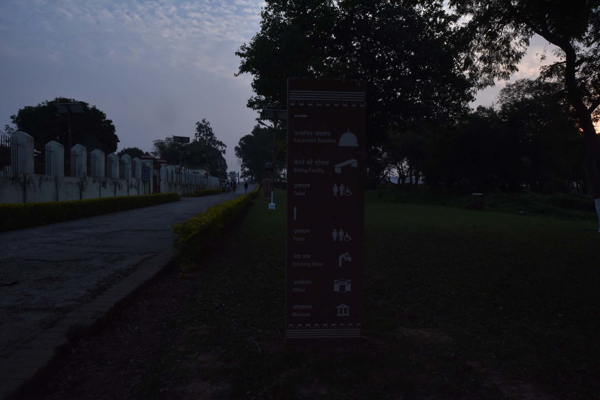
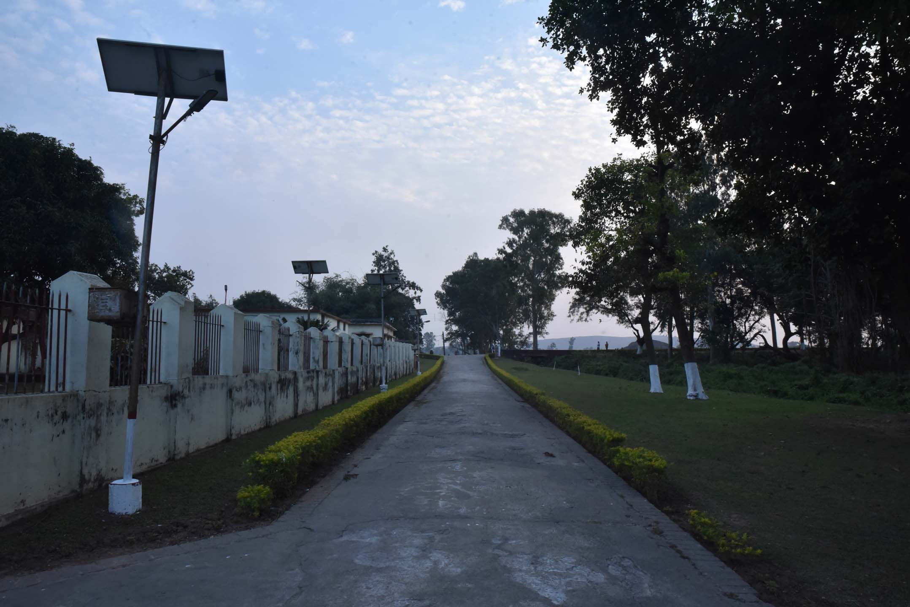

About Ruins of Vikramshila
The Ruins of Vikramshila in Bhagalpur is the excavated site of an important ancient centre of Buddhist learning. Established by King Dharmapala in the 8th century AD, it was one of the most important universities of its time.
Vikramshila University was particularly renowned for Tantric Buddhism and attracted scholars from all over the world. The ruins, spread over a large area, give visitors a glimpse into the grandeur of ancient Indian education.
Historical Significance
Vikramshila was established by King Dharmapala of the Pala dynasty as a center for Buddhist learning, particularly Tantric Buddhism. It was one of the most important Buddhist universities, second only to Nalanda in importance.
Architecture
The excavations have revealed a large monastery complex with impressive brick structures. The main stupa stands at the center, surrounded by numerous smaller stupas and residential cells for monks. The architecture reflects the grandeur of the Pala period.




Visitor Information
The archaeological site is open to visitors and offers a fascinating journey through ancient Indian history. The site is well-maintained with informative signage. The best time to visit is from October to March when the weather is pleasant.
← Back to Destinations